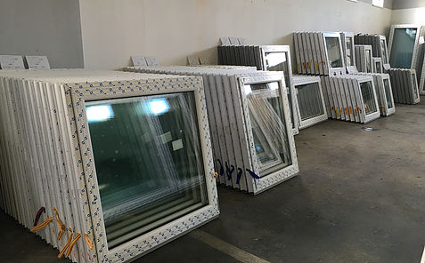
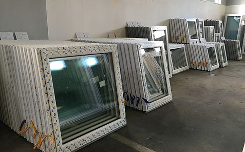
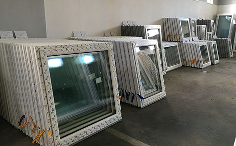
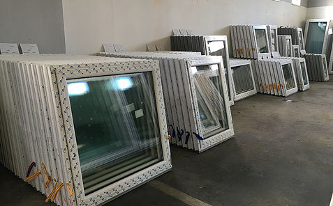
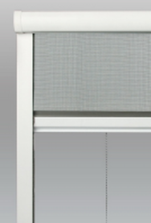
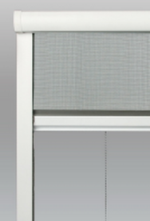

 

Najväčší podiel na trhu predstavujú práve horizontálne hliníkové žalúzie. Svojím širokým záberom rôznych typov, farebných kombinácií a rôznorodosťou oslovujú najširšie spektrum zákazníkov.
ISSO retiazka patrí medzi najžiadanejšie a najpredávanejšie produkty v oblasti tieniacej techniky. Má moderné prevedenie a je určená pre všetky typy plastových a drevených okien. Svojou estetickou úpravou a jednoduchou ovládateľnosťou je obľúbeným doplnkom kancelárií, škôl, nemocníc, bytov a rodinných domov.
Jednoduchý systém ovládania pomocou retiazkovej žalúzie umožňuje veľmi ľahkú reguláciu intenzity prenikania svetla do interiéru.
Jednoduchá montáž, cenová dostupnosť a minimálna údržba sú ideálnym riešením pre všetky interiéry. Ak k tomu pridáme aj širokú paletu farebných odtieňov nosných rámov a lamiel, je zaručené, že u nás nájdete to, čo pre Vaše okno hľadáte a potrebujete.

Rovnako ako horizontálne aj vertikálne žalúzie patria do skupiny interiérovej tieniacej techniky. Na rozdiel od horizontálnych žalúzií, vertikálne dotvárajú a doplňujú priestor okien a plnohodnotne tak nahrádzajú záclony. Všetky látky majú antistatický povrch, ktorý odpudzuje drobné prachové nečistoty.
Podobne ako horizontálne žalúzie aj vertikálne je možné vďaka konštrukcií realizovať v prevedení ako atypickú žalúziu.
Vertikálne žalúzie sú nezameniteľným bytovým doplnkom všade tam, kde sa kladie vyšší dôraz na estetický dojem interiéru.

Obzvlášť vhodné sú do reprezentačných priestorov, bánk, firiem, kancelárií, hál a pod. Spĺňajú najvyššie estetické kritériá funkčnosti a kvality aj najnáročnejšieho zákazníka.Ponúkame ich v pestrej farebnej škále. Ovládanie je veľmi jednoduché a to pomocou šnúry a retiazky. Vertikálne žalúzie sa skladajú z nosného profilu v bielej farbe, zvislých polyesterových lamiel zavesených na horných jazdcoch pomocou držiakov z plastu v stálofarebnom, nezrážanlivom a navyše antistatickom prevedení.
Látkové roletky tvoria jednu z najširších ponúk dekorov a farieb látok ,čo uľahčuje zladiť okenné doplnky k Vášmu interiéru. V ponuke sú farby vhodné do obývačiek, spálni, kuchýň, ale aj do detských izieb, kancelárií, či spoločenských priestorov a obchodných centier. Skrátka, každý si tu nájde to, čo potrebuje pre spríjemnenie životného priestoru.
ROLETKY DEŇ / NOC
Roletky Deň/Noc vynikajú v našej produkcii látkových roletiek jedinečným systémom, ktorý reguluje priepustnosť svetla do interiéru. Táto NOVINKA je osobitnou kombináciou nadčasového dizajnu a novodobej estetickosti a preto je vhodná do moderných, zrekonštruovaných domov a bytov. Roletky Deň/Noc sú trendovými výrobkami, ktoré zútulnia Váš príbytok svojou eleganciou a luxusným prevedením za cenovo dostupné relácie.
Funkčnosť roletiek Deň/Noc spočíva v dvojitom vedení látok so striedajúcimi sa priehľadnými a nepriehľadnými pruhmi, pričom regulovanie priechodnosti svetla je pomocou nekonečnej retiazky. Dizajnovo ladené prvky sú kombinované s prešívanými svetelnými otvormi a s látkou v bohatom farebnom prevedení, čím sa stávajú elegantným doplnkom interiéru.
Exteriérové žalúzie a rolety slúžia na ochranu okien pred vonkajším znečistením a poškodením, nežiadúcim slnečným žiarením, znižujú hlučnosť a chránia súkromie Vášho obydlia. Všetky typy exteriérových žalúzií a roliet sú neodmysliteľnou súčasťou moderných domov, administratívnych budov.
EXTERIÉROVÉ HORIZONTÁLNE ŽALÚZIE C80
Žalúzie C80 sú najčastejším typom žalúzií vyrábaný pre náš trh. Lamely majú tvar písmená C.
EXTERIÉROVÉ HORIZONTÁLNE ŽALÚZIE Z90
Žalúzie Z90 sú vyrábané v tvare písme Z. Svoj účel spĺňajú podobne ako vonkajšie horizontálne žalúzie C80.
Sú najefektívnejšou ochranou pred dotieravým hmyzom do Vášho obydlia. Konštrukcia siete proti hmyzu je vyrobená z hliníka.
OKENNÉ SIETE
Okenné siete patria medzi najpredávanejšie typy sieti z našej ponuky. Sú určené pre montáž na všetky typy plastových okien a eurookien. Vyznačujú sa tým, že pri montáži nedochádza k priamemu zásahu do konštrukcie okna a nie je potrebné vŕtanie. Vďaka širokej farebnej škále, ktorú ponúkame si naše siete doladíte ku každému oknu.
DVEROVÉ SIETE
Sieťové dvere sú vyrobené z kvalitne spracovaného, extrudovaného, lakovaného, hliníkového profilu. Osobitosťou tohto profilu je dverový predel. Tento ponúkame v šiestich najčastejšie sa vyskytujúcich odtieňoch okien a dverí. Montáž uchytením na pánty v obyčajnom alebo samozatváracom vyhotovení.
ROLOVACIE SIETE
Rolovacie siete sú neodmysliteľným sortimentom vo výrobe sietí proti hmyzu. Využívajú sa hlavne na oknách bytov kde, kde nie je možné namontovať pevný typ siete. Sú vyrobené z kvalitne spracovaného, extrudovaného, lakovaného, hliníkového profilu. Základom rolovacej siete je bubón s navinutou sieťovinou a vodiace koľajnice. Spätné navinutie sieťoviny do bubna zabezpečuje pružina mechanizmu.
ROLOVACIE DVERE
Rolovacie siete sú neodmysliteľným sortimentom vo výrobe sietí proti hmyzu. Základom rolovacej siete je bubon s navinutou sieťovinou a vodiace koľajnice. Využívajú sa hlavne na balkónových dverách bytov, kde nie je možné z dôvodu malého priestoru namontovať otváracie sieťové dvere. Sú vyrobené z kvalitne spracovaného, extrudovaného, lakovaného, hliníkového profilu.
 
